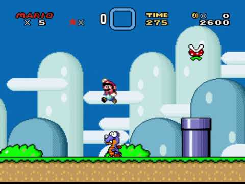

-
Une variable est une zone de la mémoire de l'ordinateur dans
laquelle on peut stocker une valeur. L'expression
"variable" signifie que cette valeur peut changer.
Par exemple:
Dans un jeu vidéo, une variable sert à stocker le score d'un
joueur. Ce score évolue pendant toute la partie, la variable va donc
tout le temps changer de valeur (dans la capture d'écran
ci-dessous Mario a 2600 points...pour l'instant).

- On peut se représenter une variable comme une boite dans laquelle on
va stocker des affaires (=nos
données). Cette boite est rangée avec d'autres sur une
étagère (=la
mémoire de l'ordinateur). Suivant ce que
l'on stocke dedans, les boites peuvent avoir des tailles différentes
(=le
type de donnée). Le plus important pour
pouvoir retrouver nos affaires, c'est d'indiquer son contenu en
collant une étiquette sur la boite (=le
nom de
la variable).
Par exemple:
On crée deux variables: l'une est nommée
score et va servir à stocker un nombre entier (pour le
moment sa valeur est 10), l'autre variable est nommée
message et contiendra une chaîne de caractères (il
s'agit du message de fin de partie. Suivant la langue sélectionnée
par le joueur, il sera différent. Pour l'instant on y a placé
l'expression "Game over").

- Pour effectuer cette opération en language informatique, il faut donc
-
typer une variable pour réserver un espace mémoire plus ou
moins grand (une chaine de caractère prend souvent plus de place
qu'un nombre entier).
Cela revient à choisir la taille de la boite -
déclarer la variable en lui donnant un nom.
C'est l'étape où l'on colle une étiquette sur la
boite
-
affecter une valeur à la variable.
C'est le moment où l'on met nos affaires dans la boite
Heureusement, en Python la syntaxe de cette opération est très simple:
 Remarque:
Remarque:
C'est bien pratique pour nous, le language Python,
contrairement à d'autres languages, n'exige pas que nous
précisions la taille de la boite (c'est à dire le type de la
variable). Un simple signe
=
et Python crée une variable à la bonne dimension (c'est à dire
qu'il réserve une portion de mémoire suffisante pour stocker vos
données).